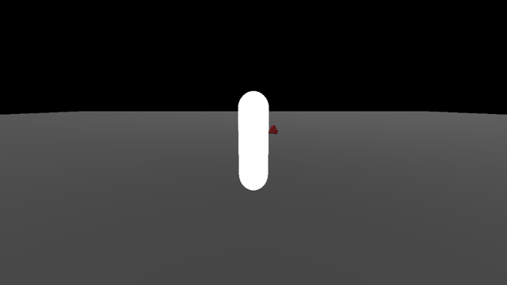
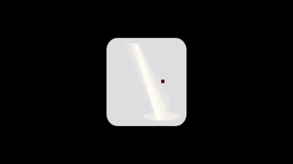
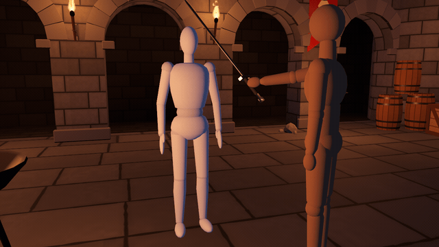

How to make a hit flash and blood effect in Godot 4
Short version: when something takes a hit, three things happen inside about a tenth of a second. It flashes white, it squashes and springs back, and something sprays out the far side. The white flash is a shader with one flash uniform that you tween from 1 to 0. The squash is a tween on the scale. The blood is a one-shot particle burst. Below are the 3D and 2D versions, each one short script plus a few lines of shader, then the timing that makes it feel like an impact, and where it runs out.

The 3D version
Put hit.gd on the MeshInstance3D that gets hit and keep hit_flash.gdshader next to it. The script replaces the mesh's material with the flash shader. Set the base colour in the shader's albedo uniform. Call hit(direction) with the way the blow travels. With autoplay on it hits itself from alternating sides every second. I ran it on Godot 4.4.1 and 4.7.2 on all three renderers with zero errors and zero warnings.
hit_flash.gdshader
shader_type spatial;
uniform vec4 albedo : source_color = vec4(0.75, 0.6, 0.5, 1.0);
uniform float flash : hint_range(0.0, 1.0) = 0.0; // 0 = normal colour, 1 = pure white
void fragment() {
ALBEDO = mix(albedo.rgb, vec3(1.0), flash);
EMISSION = vec3(flash); // stays white even in shadow
}hit.gd
extends MeshInstance3D
# Put this on the MeshInstance3D that takes the hit. hit(from_dir): from_dir = the way the blow travels.
const FLASH_TIME := 0.12 # white -> normal colour
const SQUASH_TIME := 0.1 # squash and spring back (half each way)
const SQUASH_AMOUNT := 0.2
const BLOOD_LIFE := 0.5
const AUTOPLAY_INTERVAL := 1.0
@export var autoplay := true
var _mat := ShaderMaterial.new()
var _base_scale: Vector3
var _side := 1.0
func _ready() -> void:
_mat.shader = load("res://hit_flash.gdshader")
material_override = _mat
_base_scale = scale
if autoplay:
var t := Timer.new()
t.wait_time = AUTOPLAY_INTERVAL
t.autostart = true
t.timeout.connect(func():
hit(Vector3(_side, 0, 0)) # left, right, left, ...
_side = -_side)
add_child(t)
func hit(from_dir: Vector3) -> void:
_mat.set_shader_parameter("flash", 1.0)
create_tween().tween_property(_mat, "shader_parameter/flash", 0.0, FLASH_TIME)
var d := from_dir.normalized().abs() # squash along the blow, bulge sideways
var squashed := _base_scale * (Vector3.ONE - d * SQUASH_AMOUNT + (Vector3.ONE - d) * SQUASH_AMOUNT * 0.5)
var tw := create_tween()
tw.tween_property(self, "scale", squashed, SQUASH_TIME * 0.5)
tw.tween_property(self, "scale", _base_scale, SQUASH_TIME * 0.5)
_blood(from_dir.normalized())
func _blood(dir: Vector3) -> void:
var pm := ParticleProcessMaterial.new()
pm.direction = dir + Vector3.UP * 0.5
pm.spread = 40.0
pm.initial_velocity_min = 1.5
pm.initial_velocity_max = 6.0
pm.gravity = Vector3(0, -9.8, 0)
pm.scale_min = 0.4
pm.scale_max = 1.3
pm.particle_flag_align_y = true # each drop stretches along its flight
var m := CapsuleMesh.new()
m.radius = 0.018
m.height = 0.11
var mat := StandardMaterial3D.new()
mat.albedo_color = Color(0.45, 0.02, 0.03)
m.material = mat
var p := GPUParticles3D.new()
p.amount = 60
p.lifetime = BLOOD_LIFE
p.one_shot = true
p.explosiveness = 1.0
p.process_material = pm
p.draw_pass_1 = m
p.visibility_aabb = AABB(Vector3(-4, -3, -4), Vector3(8, 6, 8))
get_parent().add_child(p)
p.global_position = global_position + dir * 0.3 + Vector3.UP * 0.2 # comes out the far side
p.emitting = true
get_tree().create_timer(BLOOD_LIFE + 0.3).timeout.connect(p.queue_free)The 2D version
Same idea on a Sprite2D. The shader keeps the sprite's own texture and alpha and mixes the colour toward white. The blood is a CPUParticles2D, which is plenty for 24 dots.

hit_flash_2d.gdshader
shader_type canvas_item;
uniform float flash : hint_range(0.0, 1.0) = 0.0; // 0 = normal colour, 1 = pure white
void fragment() {
vec4 c = texture(TEXTURE, UV);
COLOR = vec4(mix(c.rgb, vec3(1.0), flash), c.a);
}hit_2d.gd
extends Sprite2D
# Put this on the Sprite2D that takes the hit. hit(from_dir): from_dir = the way the blow travels.
const FLASH_TIME := 0.12
const SQUASH_TIME := 0.1
const AUTOPLAY_INTERVAL := 1.0
@export var autoplay := true
var _mat := ShaderMaterial.new()
var _base_scale: Vector2
var _side := 1.0
func _ready() -> void:
_mat.shader = load("res://hit_flash_2d.gdshader")
material = _mat
_base_scale = scale
if autoplay:
var t := Timer.new()
t.wait_time = AUTOPLAY_INTERVAL
t.autostart = true
t.timeout.connect(func(): hit(Vector2(_side, 0)); _side = -_side)
add_child(t)
func hit(from_dir: Vector2) -> void:
_mat.set_shader_parameter("flash", 1.0)
create_tween().tween_property(_mat, "shader_parameter/flash", 0.0, FLASH_TIME)
var tw := create_tween()
tw.tween_property(self, "scale", _base_scale * Vector2(0.8, 1.1), SQUASH_TIME * 0.5)
tw.tween_property(self, "scale", _base_scale, SQUASH_TIME * 0.5)
var b := CPUParticles2D.new() # blood: dark red dots, gravity, 0.5 s
b.amount = 24; b.lifetime = 0.5; b.one_shot = true; b.explosiveness = 1.0
b.direction = from_dir + Vector2.UP * 0.5; b.spread = 30.0
b.initial_velocity_min = 160.0; b.initial_velocity_max = 320.0
b.gravity = Vector2(0, 700); b.scale_amount_min = 5.0; b.scale_amount_max = 9.0
b.color = Color(0.45, 0.02, 0.03); b.position = position + from_dir * 50.0
get_parent().add_child(b)
b.emitting = true
get_tree().create_timer(0.8).timeout.connect(b.queue_free)Why the timing matters
| Part | Time | Why |
|---|---|---|
| White flash | 0.12 s | Long enough to see at 60 fps (about seven frames), short enough to read as a hit and not a power-up. It's full white on the first frame. A flash that fades in feels late. |
| Squash | 0.1 s, 0.2 | The body gets thinner along the blow and wider across it, then springs back. You barely notice it on its own, but without it the flash looks like a light switching on. |
| Blood | 0.5 s | 60 thin drops leave the far side of the body in the direction of the blow and fall with gravity. Each drop is a capsule stretched along its own velocity (particle_flag_align_y). I tried round drops first and they read as a clump of dots. |
The flash shader also writes the flash into EMISSION. Without that, a character standing in shadow flashes grey instead of white.
Variations
A red flash instead of white is the vec3(1.0) in the shader changed to vec3(1.0, 0.2, 0.2). For a robot or a bloodless game, make the drops pale yellow, raise the velocity and cut the life to 0.3 s, and you have sparks. A critical hit is a longer flash (0.2 s), a bigger squash and twice the drops. Hit-stop, where the whole game freezes for a few frames on impact, goes in the code that calls hit(), not in the effect.
Where this stops being enough
The hit leaves nothing behind. In most action games the wound stays where the blow landed, follows the character as it walks, and bleeds down the body. That means working out where on the mesh the hit landed and drawing on the mesh itself, and on a skinned character the mark has to move with the bones.
The drops fall through the floor. Making them splat where they land and stay as stains means either physics on every drop or a known floor height and wall planes to test against.
The flash shader replaces the material. A real character has its own material with textures. You'd put the flash in a next_pass shader on top of it, or add the uniform to the character's own shader.
Or drop in a preset
The pack I sell for this is Blood & Hit VFX for Godot 4. You hit a character and the wound stays where the blow landed: it rides on the skinned body as it walks, bleeds down the skin, drips and pools on the floor, and the spray sticks to the floor and walls. There are 47 presets in 3D and 2D, ten kinds of wound, a one-line bloodless switch, and a hit flash. It runs on Compatibility and in Web exports, and there's a browser demo on the itch page.

The free versions of all my packs are on GitHub under MIT.